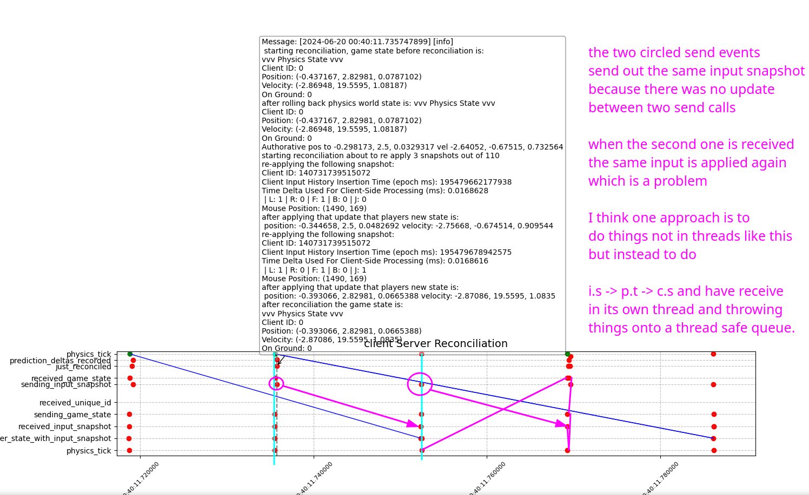

may-june-(early july)
This summer I've been making good progress, the past two months I have been working on client side prediction and server reconciliation. If that word made no sense to you, understand this: without this feature your multiplayer game is going to have a horrible game feel with the input latency being as bad as the internet connection you have, making the game unplayable if you hope to have fast paced gameplay. While the ideas behind it all aren't that complex, actually implementing it and being able to debug it can be quite difficult, here's how the progress went.
Initially I had no real debugging tools and had just a working client-server setup, with no client side interpolation and server reconciliation, first I created an ExpiringDataContainer which can store client side input snapshots for a fixed time duration, which automatically clears itself out when it gets accessed, also when server messages come through from the server, immediately set the client state to that then collect all input snapshots that have been applied after the one that the server has processed up to and render the game.
I had implemented this but there was jitter (by jitter I'm not referring to network variance, but rather a general feeling about how smooth the game felt as compared to single player) in the game, and I wasn't sure why because from the above it should have just worked, this made me confused but I realized the only way to debug this was to be able to visualize the interaction between the client and the server and so I learned how to use the C++ logging library spdlog, this turned out to be a great decision as I then used their file sink functionailty to start writing out events to the log files, then created a matplotlib visualizer, and even added more features by hooking into their mouse and keyboard callbacks.
During this initial phase I used the visualizer to help understand how much jitter was happening and when it was happening initially the jitter plot looked something like this:
Where the jitter is plotted on the line "prediction_deltas_recorded" and further away from the dotted line is worse, even though the graph looks extreme, the actual jitter felt was much less pronounced then this graph, but felt nevertheless.
The first bug I figured out was that multithreading was causing problems, this is simply because of the un-ordered behavior of threads if they are all doing their own thing, for example here is an example:

An important discovery I made was that having things occur in the same order on every iteration is extremely important if you want to remove sources of jitter that would be caused by events occuring in different orders, therefore I removed multithreading entirely, by doing this it removed much of the jitter. In the future I may be able to do rendering on its own thread because the order in which that occurs doesn't effect things like physics updates and network poll events.
After making the above changes jitter was reduced, but it was still there and I noticed that it occured right after a jump happened, the reason why this was happening was that when you receive the authorative server update containing your position and velocity by setting your position certain state about the player may not be accounted for, for example depending on your physics engine, it may require a physics tick to occur to update the property which states whether or not your player is touching the ground, this ends up mattering a lot, because if you use that property to allow jumping to occur in game, then a jump just may not occur during reconciliation, because that property was never updated when you set the position, in order to correct for this I had to call RefreshContacts on the player in order for the game to check for this, although I was warned by the creator of the physics engine that this may not always produce the same results as the physics tick that occured in the past. For a more robust solution you must have a history buffer of the physics simulation frames and rollback to the correct one before reconciling to make sure everything is the same, after correcting for this the jitter felt while jumping was removed.
After I fixed this there was no more jitter, but at the same time all the testing so far had been done with the server hosted on the same computer, and reconciliation only used on average 1 input snapshot, so I went on a remote machine booted up the server, connected my client, and then jitter, again. This made me sad, but I decided to debug this as well, I wrote a script that can grab the log file of the server for visualization and tried debugging it, but the timing of things on the visualizer made no sense, and this is where I remembered that clock times differ between two computers, in fact first I saw that it was 4 hours off, so I tried just subtracting 4 hours from the server time, but there was a difference between the two clocks which I could detect which was around 4-7 seconds off.
I realized I needed a program which could deduce what the time delta is between two computers and so I took a side tangent to learn about how to do this, which ended up in the birth of a simple program which I called clock_deltas which is a client server program which can estimate the clock deltas between two computers, this ended up being successful and the logs were able to be correctly visualized. One thing that I learned along the way was that different computers have what is known as clock drift which is that over time the difference between the clocks change, what this means is that every time I want to visualize the log files I have to measure the clock delta for this particular moment in time, which is fine and has to be done.
Now that I could visualize properly I was able to identify the next cause of jitter which can be seen here:
In the above graph the top 8 lines are the client and the bottom 5 are the server, at around 3:07:08 we can see that two input snapshots got to the server between two server physics updates which is by the two blue lines corresponding to the same server physics update, I believe that this phenomenon is caused by time drift of the client/server clocks cause the server or client to have slightly longer ticks even both they both run at 60hz, eventually allowing the time for two packets to arrive during one physics tick, specifically this occurs when the server tick is very close to the time that an incoming packet is received at, combined with the randomness of the packets travel route, this may be the cause.
The reason why receiving double packets had not been dealt with up until this point was that I am sending and receiving at 60hz, which so far has shown to be ok performance wise, and so I never really had this issue until this moment, I started debugging why this causes a delta and I realized that it was because of the architecture of the server. The server has a thread safe queue and when the server receives new client input snapshtos they get thrown onto the queue, then during the physics update the queue is drained, and at each iteration the velocity of each player is updated, after iterating through all of them, a single physics update occurs. This is a problem because on the client, two physics updates occured for each of the client inputs snapshots, meaning that the server has accounted for less time then the server in terms of physics update time, this caused the delta, and by instead doing a local physics update on the individual character for each input snapshot, this fixed the issue.
Finally there was one last bug which was that after reconciliation the players rendering state was not updated (which just grabs the current yaw, pitch and positio of the player and stores it for rendering), after doing that I am able to have smooth performance on Toronto to New York around ~13ms of ping and to San Fran ~75ms ping, without reconciliation the input latency would be equivalent to this ping time, instead we only have 1-2ms of input lag which just comes from the rendering call which is much better. I've only tested up to 2 player connections at the moment, because that is what I minimally need to start doing basic gameplay test with people, when there is more interest in the game I will start looking at higher player count performance, which I think will result in me having to reduce the send rate of the server, which I will get to when I have to cross that bridge. As of right now the jitter graph over a period of 5 seconds looks like this:
You'll notice that there still is some, but it is greatly reduced as compared to the initial state, I noticed that some of the jitter is still coming from the jump event, so I'll debug that further, but all in all it's feeling quite good.
january
So much has happended since the last update, good and bad, either way frag-z progress is moving forward.
To sum it up, during the last year I was mainly working and just trying to make ends meet and in my spare time doing what I could with the game. The main issue was godot, I wanted really good performance even on older hardware because I want anyone to play the game and for it to be bloat free. Godot was a detractor in that regard and having so many available features at my finger tips and weird architectural choices I couldn't bend made motivation to work on the project harder and harder to find.
Since last january I'm pretty sure I fleshed out the main architecture for how skills can be detected. I refactored the godot project into smaller sections and ran performance tests on windows mac and linux. The performance was not up to par and I abandoned godot for all of the above reasons.
Since abandoning godot I learned how to use blender to create my own models, re-learned c++ compiling, cmake, how to render using opengl, use shaders, load obj's into the game, learned bullet physics, unlearned bullet physics and learned the basics of jolt physics.
The current status of the game is that we have a game where there is gravity and you can move around and bump into the map, entirely without godot and just with c++.